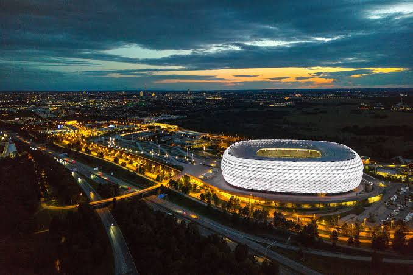

Quando a Copa do Mundo de 2006 foi realizada, o mundo vivia um período de crescimento econômico
impulsionado pela globalização e pela expansão do comércio internacional. A Alemanha, uma das maiores
economias do planeta, utilizou o evento para reafirmar sua posição como potência econômica e política da
Europa. Nesse contexto, a Copa de 2006 representou não apenas uma competição esportiva, mas também uma
demonstração da capacidade organizacional alemã e de sua influência internacional.
A Alemanha possuía uma infraestrutura moderna e bem desenvolvida antes mesmo do torneio. Por isso,
grande parte dos investimentos foi direcionada à modernização de estádios, melhorias nos sistemas de
transporte e aperfeiçoamento dos serviços turísticos. Estima-se que os investimentos totais tenham
ultrapassado US$ 4 bilhões.

Diversas cidades-sede passaram por reformas urbanas e receberam melhorias em aeroportos, estações
ferroviárias e redes de transporte público. A eficiência da organização foi amplamente reconhecida,
contribuindo para fortalecer a imagem do país perante a comunidade internacional.
Diversas cidades-sede passaram por reformas urbanas e receberam melhorias em aeroportos, estações
ferroviárias e redes de transporte público. A eficiência da organização foi amplamente reconhecida,
contribuindo para fortalecer a imagem do país perante a comunidade internacional.
O principal legado da Copa de 2006 foi o fortalecimento do turismo e da imagem da Alemanha como um país
moderno, acolhedor e altamente desenvolvido. O evento também serviu para impulsionar a economia local e
ampliar a visibilidade internacional das cidades-sede.
A final foi disputada no Estádio Olímpico de Berlim diante de mais de 69 mil espectadores. A seleção da
Itália conquistou o título ao vencer a França nos pênaltis após empate por 1 a 1 no tempo regulamentar.